Using the Calendar app
Note
The Calendar app comes installed with Nextcloud Hub by default, but can be disabled. Please ask your Administrator for it.
The Nextcloud Calendar app works similar to other calendar applications you can sync your Nextcloud calendars and events with.
When you first access the Calendar app, a default first calendar will be created for you.

Managing your calendars
Create a new Calendar
If you plan on setting up a new calendar without transferring any old data from your previous calendar, creating a new calendar is the way you should go.

Click on
+ New Calendarin the left sidebar.Type in a name for your new calendar, e.g. "Work", "Home" or "Marketing planning".
After clicking on the checkmark, your new calendar is created and can be synced across your devices, filled with new events and shared with your friends and colleagues.
{kind=link}
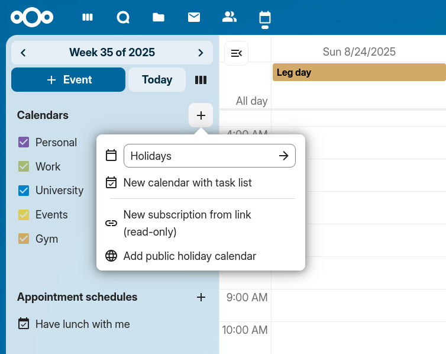
Import a Calendar
If you want to transfer your calendar and their respective events to your Nextcloud instance, importing is the best way to do so.

Click on the settings-icon labeled with
Calendar settingsat the bottom-left.After clicking on
Import Calendar, found in theGeneralsection, you can select one or more calendar files from your local device to upload.Select a
Calendar to import into.The upload can take some time and depends on how big the calendar you import is. A blue progress bar will appear below "Calendar Settings".
Note
The Nextcloud Calendar application only supports iCalendar-compatible
.ics-files, defined in RFC 5545.
Import an Event/Add .ics Event
In many places, you can download event details as an .ics file, or via a button saying "ical", "Apple Calendar" or "Outlook".
Click on the settings-icon labeled with
Calendar settingsat the bottom-left.After clicking on
Import calendaryou can select one or more calendar files from your local device to upload.Select a
Calendar to import into.The upload can take some time and depends on how big the calendar/event you import is. A blue progress bar will appear below "Calendar Settings".
Note
The Nextcloud Calendar application only supports iCalendar-compatible
.ics-files, defined in RFC 5545.
Edit, Export or Delete a Calendar
Sometimes you may want to change the color or the entire name of a previous imported or created calendar. You may also want to export it to your local hard drive or delete it forever.
Note
Please keep in mind that deleting a calendar is an irreversible action. After deletion, there is no way of restoring the calendar unless you have a local backup.

Click on the "pen" icon of the respective calendar. You will see a new popup that will allow you to change the calendar name and color, and buttons to delete or export the calendar.

Calendar Transparency
You can toggle the checkbox "Never show me as busy (set calendar to transparent)" to influence if this calendars' events are taken into account in Free/Busy calculations. If checked, no events in this calendar will be taken into account, your schedule will always be free, regardless of an events' settings.

Sharing calendars
You may share your calendar with local users, groups or with remote users on federated servers.
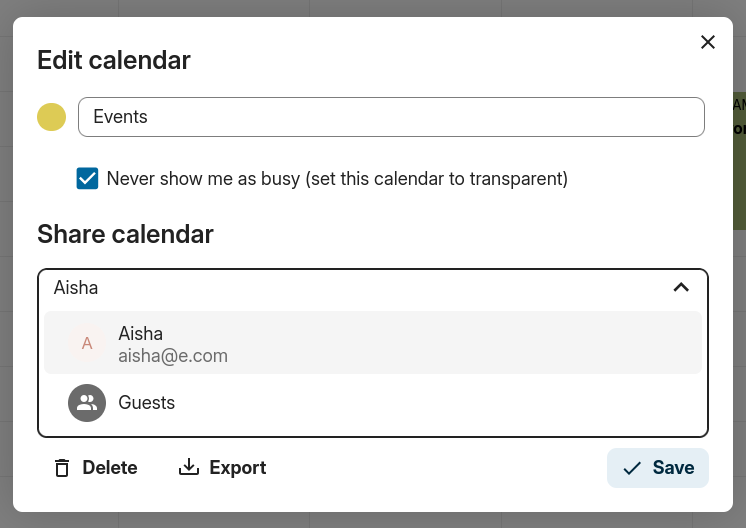
Calendars may be shared with write access or read-only. When sharing a calendar with write access, users with whom the calendar is shared will be able to create new events into the calendar as well as edit and delete existing ones.

Note
Calendar shares currently cannot be accepted or rejected. If you want to stop having a calendar that someone shared with you, you can click on the 3-dot menu next to the calendar in the calendar list and click on "Unshare from me". To restore a share, the calendar can be reshared again, either for the whole group, resetting all unshares, or for a single user.
Federated calendar sharing
Added in version 32.0.0.
Changed in version 33.0.0: Federated calendar shares support read/write access.
Sharing a calendar with a user on another Nextcloud instance works just like sharing with a local user.
The difference is that you need to use the federated user identifier as the recipient, which has the format
<username>@<instance> (e.g. alice@cloud.example.com).
Starting with Nextcloud 33, federated shares support full read/write access, allowing remote users to create, edit, and delete events in the shared calendar. In Nextcloud 32, federated shares were read-only.
Publishing a calendar
Calendars can be published through a public link to make them viewable (read-only) to external users. You may create a public link by opening the share menu for a calendar and clicking on « + » next to « Share link ». Once created you can copy the public link to your clipboard or send it through email.
There's also an « embedding code » that provides an HTML iframe to embed your calendar into public pages.
Multiple calendars can be shared together by adding their unique tokens to the end of an embed link. Individual tokens can be found at the end of each calendar's public link. The full address will look like
https://cloud.example.com/index.php/apps/calendar/embed/<token1>-<token2>-<token3>
To change the default view or date of an embedded calendar, you need to provide a URL that looks like https://cloud.example.com/index.php/apps/calendar/embed/<token>/<view>/<date>.
In this URL you need to replace the following variables:
<token>with the calendar's token,<view>with one ofdayGridMonth,timeGridWeek,timeGridDay,listMonth,listWeek,listDay. The default view isdayGridMonthand the normally used list islistMonth,<date>withnowor any date with the following format<year>-<month>-<day>(e.g.2019-12-28).
On the public page, users are able to get the subscription link for the calendar and export the whole calendar directly.
Calendar Widget
You can embed your calendars into supported apps like Talk, Notes, etc...
by either sharing the public link to make the embed viewable (read-only) to all users
or by using the internal link to make it private.
Subscribe to a Calendar
You can subscribe to iCal calendars directly inside of your Nextcloud. By supporting this interoperable standard (RFC 5545) we made Nextcloud calendar compatible to Google Calendar, Apple iCloud and many other calendar-servers you can exchange your calendars with, including subscription links from calendar published on other Nextcloud instances, as described above.
Click on
+ New calendarin the left sidebarClick on
+ New subscription from link (read-only)Type in or paste the link of the shared calendar you want to subscribe to.
Finished. Your calendar subscriptions will be updated regularly.
Note
Subscriptions are refreshed every week by default. Your administrator may have changed this setting.
Subscribe to a Holiday Calendar
Added in version 4.4.
You can subscribe to a read-only holiday calendar provided by Thunderbird.
Click on
+ New calendarin the left sidebarClick on
+ Add holiday calendarFind your country or region and click
Subscribe
Managing Events
Create a new event
Events can be created by clicking in the area when the event is scheduled. In the day- and week-view of the calendar you just click, pull and release your cursor over the area when the event is taking place.
Clicking on the globe button brings up the timezone selector. You are able to choose different timezones for the start and end of your event. This is useful when travelling.

The month-view only requires a single click into the area of the target day.

After that, you can type in the event's name (e.g. Meeting with Linus), choose the calendar in which you want to save the event to (e.g. Personal, Community Events), check and concretize the time span or set the event as an all-day event. Optionally you can specify a location and a description.
If you want to edit advanced details such as the Attendees or Reminders, or if you
want to set the event as a repeating event, click on the More button to open the advanced editor.
Add Talk conversation
You can include an existing Talk conversation in your event by clicking "Add Talk conversation". To view the list of existing Talk conversations, ensure the Talk app is enabled. If you'd like to create a new Talk conversation, you can do so directly from the same modal.

Note
If you always want to open the advanced editor instead of the
simple event editor popup, you uncheck the option
Enable simplified editor in the Settings section of the app.
Clicking on the blue Create button will finally create the event.
Edit, duplicate or delete an event
If you want to edit, duplicate or delete a specific event, you first need to click on the event.
After that you will be able to re-set all event details and open the
advanced editor by clicking on More.
Clicking on the Update button will update the event. To cancel your changes, click on the close icon on top right of the popup or advanced editor.
If you open the advanced view and click the three dot menu next to the event name, you have an option to export the event as an .ics file or remove the event from your calendar.

Tip
If you delete events they will go into your trash bin. You can restore accidentally deleted events there.
You can also export, duplicate or delete an event from the basic editor.

Invite attendees to an event
You may add attendees to an event to let them know they're invited. They will receive an email invitation and will be able to confirm or cancel their participation to the event. Attendees may be other users on your Nextcloud instances, contacts in your address books and direct email addresses. You may also change the level of participation per attendees, or disable the email information for a specific attendee.

Changed in version 25: Attendee email response links no longer offer inputs to add a comment or invite additional guests to the event.
Tip
When adding other Nextcloud users as attendees to an event, you may access their free-busy information if available, helping you determine when the best time slot for your event is. Set your working hours to let others know when you are available. Free-busy information is only available for other users on the same Nextcloud instance.
Attention
The server administration needs to setup the e-mail server in the Basic settings tab, as this mail will be used to send invitations.
Invitation status legend (as an attendee):
Filled in event: You accepted
Strikethrough: You declined
Stripes: Tentative
Empty event: You haven't responded yet
If you are the organizer and all your attendees declined, the event will be empty with a warning symbol.
Checking attendees' busy times
After adding attendees to an event you can click on Find a time to bring up the "Free / Busy" modal. It allows you to see when each attendee has other events, and can help you decide on a time when everyone is free.

Your own busy blocks will be shown in the same color as your personal calendar, your out of office times will be shown in gray, and other attendees' busy times will have the same color as their avatar shown in the advanced editor.
You can select a time slot for the event directly on the calendar.
Assign rooms and resources to an event
Similar to attendees you can add rooms and resources to your events. The system will make sure that each room and resource is booked without conflict. The first time a user adds the room or resource to an event, it will show as accepted. Any further events at overlapping times will show the room or resource as rejected.
Note
Rooms and resources are not managed by Nextcloud itself and the Calendar app will not allow you to add or change a resource. Your Administrator has to install and possibly configure resource back ends before you can use them as a user.
Room availability
Added in version 5.0.
If the "Calendar Rooms and Resources" app is installed on your instance, you can now find Room availability the Resources section. It lists all the existing rooms. You can check the availability of each room in a manner similar to checking the free/busy status of event attendees.

Add attachments to events
You can import attachments to your events either by uploading them or adding them from files

Note
Attachments can be added while creating new events or editing existent ones. Newly uploaded files will be saved in files by default in the calendar folder in the root directory.
You can change the attachment folder by going to Calendar settings in the bottom left corner and changing default attachments location.

Set up reminders
You can set up reminders to be notified before an event occurs. Currently supported notification methods are:
Email notifications
Nextcloud notifications
You may set reminders at a time relative to the event or at a specific date.

Note
Only the calendar owner and people or groups with whom the calendar is shared with write access will get notifications. If you don't get any notifications but think you should, your Administrator could also have disabled this for your server.
Note
If you synchronize your calendar with mobile devices or other 3rd-party clients, notifications may also show up there.
Add recurring options
An event may be set as "recurring", so that it can happen every day, week, month or year. Specific rules can be added to set which day of the week the event happens or more complex rules, such as every fourth Wednesday of each month.
You can also tell when the recurrence ends.
{kind=link}
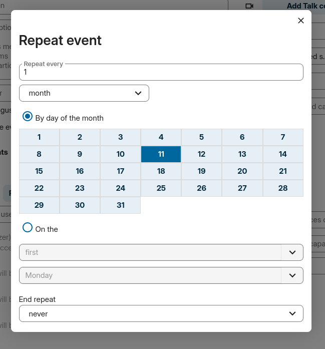
Trash bin
If you delete events, tasks or a calendar in Calendar, your data is not gone yet. Instead, those items will be collected in a trash bin. This offers you to undo a deletion. After a period which defaults to 30 days (your administration may have changed this setting), those items will be deleted permanently. You can also permanently delete items earlier if you wish.
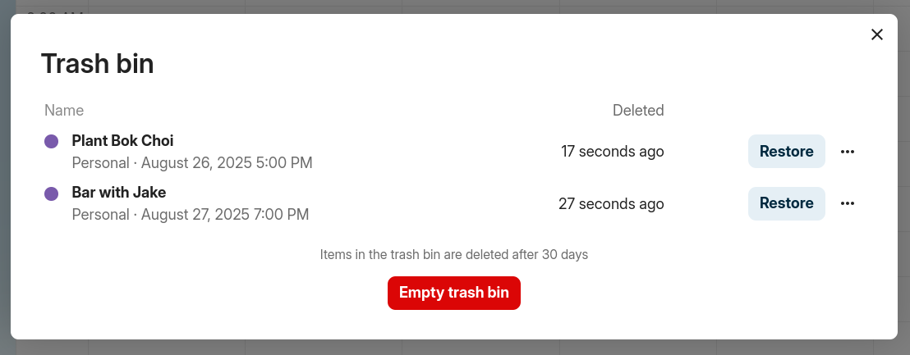
The Empty trash bin buttons will wipe all trash bin contents in one step.
Tip
The trash bin is only accessible from the Calendar app. Any connected application or app won't be able to display its contents. However, events, tasks and calendars deleted in connected applications or app will also end up in the trash bin.
Automated User Status
When you have a calendar event scheduled that has a "BUSY" status, your user status will be automatically set to "In a meeting" unless you have set yourself to "Do Not Disturb" or "Invisible". You can overwrite the status with a custom message any time, or set your calendar events to "FREE". Calendars that are transparent will be ignored.
Responding to invitations
You can directly respond to invitations inside the app. Click on the event and select your participation status. You can respond to an invitation by accepting, declining or accepting tentatively.
{kind=link}
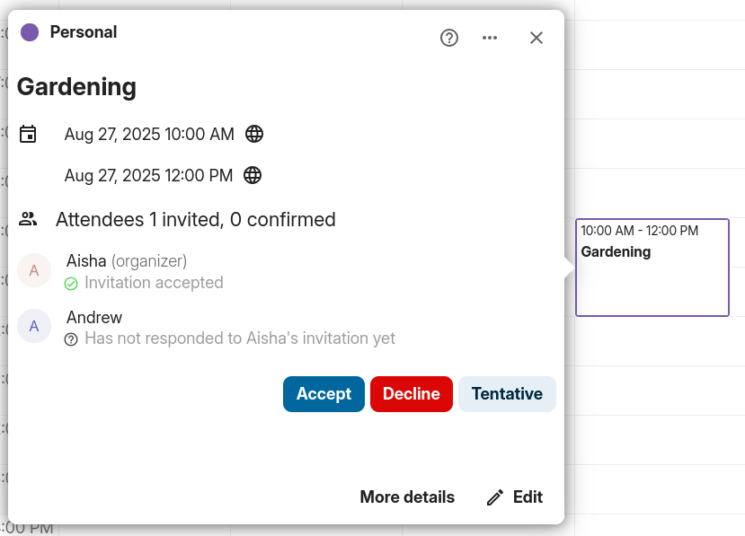
You can respond to an invitation from the advanced editor too.

Availability (Working Hours)
The general availability independent of scheduled events can be set in the groupware settings of Nextcloud. These settings will be reflected in the free-busy view when you schedule a meeting with other people in Calendar. Some connected clients like Thunderbird will show this data as well.

You can configure one-time absences on top of your regular availability in the Absence settings section.
Birthday calendar
The birthday calendar is a auto-generated calendar which will automatically fetch the birthdays from your contacts. The only way to edit this calendar is by filing your contacts with birthday dates. You can not directly edit this calendar from the calendar-app.
Note
If you do not see the birthday calendar, your Administrator may have disabled this for your server.
Appointments
As of Calendar v3 the app can generate appointment slots which other Nextcloud users but also people without an account on the instance can book. Appointments offer fine-granular control over when you are possibly free to meet up. This can eliminate the need to send emails back and forth to settle on a date and time.
In this section we'll use the term organizer for the person who owns the calendar and sets up appointment slots. The attendee is the person who books one of the slots.
Creating an appointment configuration
As an organizer of appointments you open the main Calendar web UI. In the left sidebar you'll find a section for appointments, were you can open the dialogue to create a new one.

One of the basic infos of every appointment is a title describing what the appointment is about (e.g. "One-on-one" when an organizer wants to offer colleagues a personal call), where an appointment will take place and a more detailed description of what this appointment is about.

The duration of the appointment can be picked from a predefined list. Next, you can set the desired increment. The increment is the rate at which possible slots are available. For example, you could have one hour long slots, but you give them away at 30 minute increments so an attendee can book at 9:00AM but also at 9:30AM. Optional infos about location and a description give the attendees some more context.Every booked appointment will be written into one of your calendars, so you can chose which one that should be. Appointments can be public or private. Public appointments can be discovered through the profile page of a Nextcloud user. Private appointments are only accessible to the people who receive the secret URL.
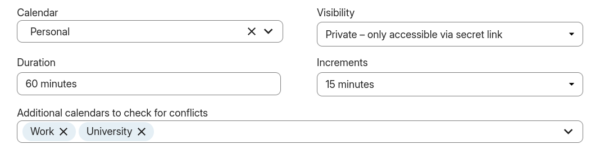
Note
Only slots that do not conflict with existing events in your calendars will be shown to attendees.
The organizer of an appointment can specify at which times of the week it's generally possible to book a slot. This could be the working hours but also any other customized schedule.
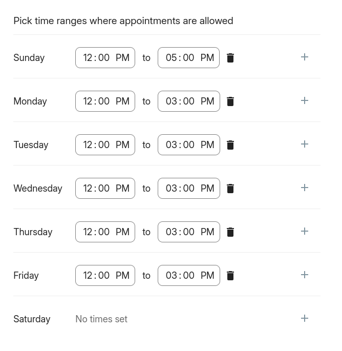
Some appointments require time to prepare, e.g. when you meet at a venue and you have to drive there. The organizer can chose to select a time duration that must be free. Only slots that do not conflict with other events during the preparation time will be available. Moreover there is the option to specify a time after each appointment that has to be free. To prevent an attendee from booking too short notice it's possible to configure how soon the next possible appointment might take place. Setting a maximum number of slots per day can limit how many appointments are possibly booked by attendees.
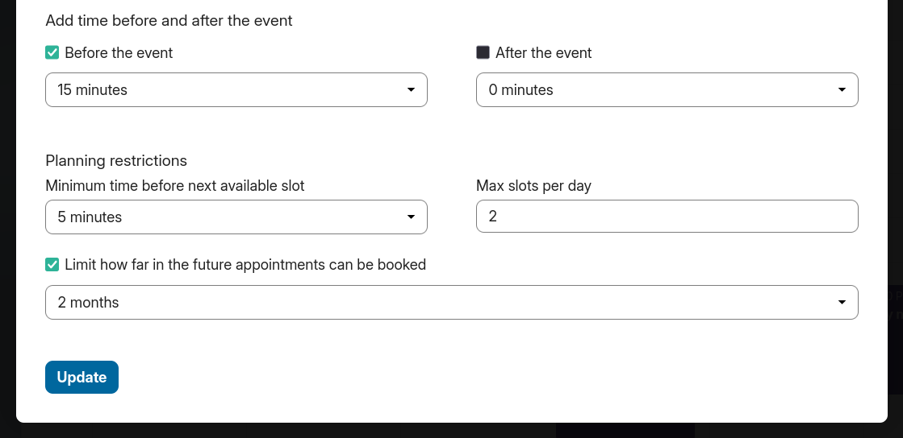
The configured appointment will then be listed in the left sidebar. Via the three dot menu, you can preview the appointment. You can copy the link to the appointment and share it with your target attendees, or let them discover your public appointment via the profile page. You can also edit or delete the appointment configuration.
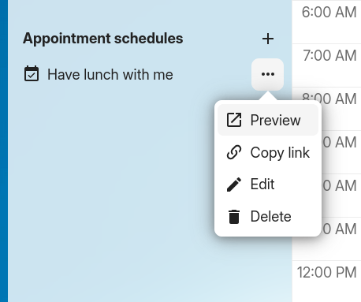
Booking an appointment
The booking page shows an attendee the title, location, description and length of an appointment. For a selected day there will be a list with all the possible time slots. On days with no available slots, too many conflicts or a reached daily maximum limit of already booked appointments, the list might be empty.

For the booking, attendees have to enter a name and an email address. Optionally they can also add a comment.

When the booking was successful, a confirmation dialogue will be shown to the attendee.

To verify that the attendee email address is valid, a confirmation email will be sent to them.

Only after the attendee clicks the confirmation link from the email the appointment booking will be accepted and forwarded to the organizer.

The attendee will receive another email confirming the details of their appointment.

Note
If a slot has not been confirmed, it will still show up as bookable. Until then the time slot might also be booked by another user who confirms their booking earlier. The system will detect the conflict and offer to pick a new time slot.
Working with the booked appointment
Once the booking is done, the organizer will find an event in their calendar with the appointment details and the attendee.
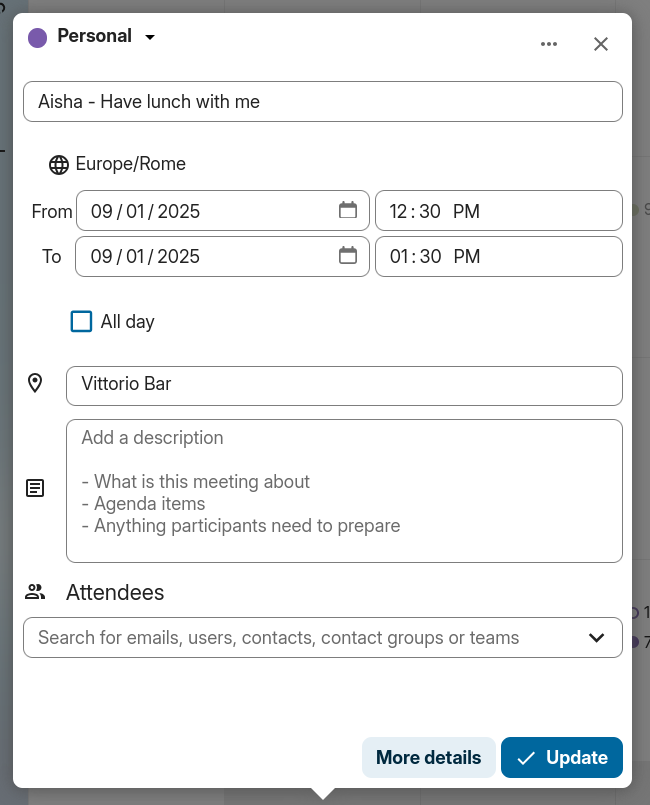
If the appointment has the setting "Add time before event" or "Add time after the event" enabled, they will show up as separate events in the calendar for the organizer.
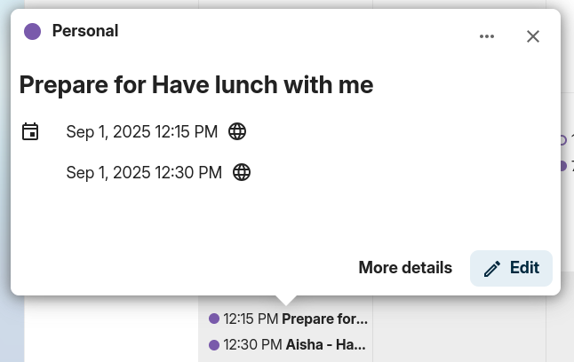
As with any other event that has attendees, changes and cancellations will trigger a notification to the attendee's email.
If attendees wish to cancel the appointment they have to get in contact with the organizer, so that the organizer can cancel or even delete the event.
Create Talk room for booked appointments
You can create a Talk room directly from the calendar app for a booked appointment. The option can be found on the 'Create appointment' modal. A unique link will be generated for every booked appointment and sent via the confirmation email when you check this option.
Proposals
Added in version 6.0.0.
Finding a meeting time for a group of participants can be challenging. As of Calendar v6, a new feature was introduced that allows users to create proposals for meeting times. This means that instead of just booking a time, or searching for a available time in the free busy view, participants can vote on a set of proposed times for a meeting. The organizer can then review the participants' preferences and choose the most suitable time for the meeting.
Managing proposals

The proposal list in the left sidebar shows all the proposals that the user has created. The list shows the title of the proposal, the number of responded participants and a status of whether all participants have responded.
The user can click on the three dot menu next to a proposal item to edit, delete or view an existing proposal.
Creating a proposal
To create a new proposal a user can click on the plus icon next to the "Meeting Proposals" header at the top of the proposal list. This will open a modal where the user can enter all the relevant details for the proposed meeting.

The proposal editor has some basic fields that are similar to the event editor, such as title, description, location, duration and participants selection, that the user can fill out. These details are then used to inform the participants about the proposed meeting and times.
The key difference is the "Proposed times" selection, where the user can select multiple time slots for a meeting. The user can add as many time slots as they want, and each time slot can be edited or removed as needed.
Once the user has filled out all the required details, title, duration, participants and selected the proposed times, they can click the "Create" button to create the proposal. This will save the proposal and send notifications to all the selected participants.
Editing a proposal
A user can edit an existing proposal by clicking on the three dot menu next to a proposal item in the proposal list and selecting "Edit". This will open the same modal as when creating a new proposal, but with all the existing details filled out.
After making any necessary changes, the user can click the "Update" button to save the changes. This will also send notifications to all the participants about the updated proposal.
Viewing a proposal progress
Users can view the progress of a proposal by clicking on the proposal item in the proposal list or clicking "View" in the three dot menu. This will open a detailed view of the proposal, with all details and a times and participants matrix, showing all the proposed times and participants' responses.

In this view, the user can see which participants have responded to the proposal and their preferences for each proposed time. The user can also see the total number of votes for each proposed time, which can help them decide on the best time for the meeting.
Once the user has reviewed the participants' responses, they can select the most popular time for the meeting by clicking on the "Create" button at the end of the date/participant matrix. This will create a new event in the user's calendar and send notifications to all participants about the confirmed meeting time.
Notifications for a proposed meeting
Users will receive email notifications for various events related to a proposed meeting, including:
When a new proposal is created
When a proposal is updated
When a proposal is deleted
When the final meeting time is confirmed
These notifications help all participants stay informed and engaged throughout the proposal process.
The notification emails contain the basic details for the proposed meeting, like title, description, location, duration, and proposed times. They also include a link to the response page, where participants can see all the details and respond to the proposed times.
Responding to a proposed meeting
Participants can respond to a proposed meeting by clicking on the link in the notification email. This will open the detailed view of the proposed meeting, where they can see all the proposed times, other participants' and their responses, and select their availability/preferences for each proposed time.

Participants can select their availability for each proposed time by selecting their preference on the corresponding line in the times and participants matrix. They can choose from three options: "Yes", "No", or "Maybe". Once they have made their selections, they can click the "Submit" button to save their responses.